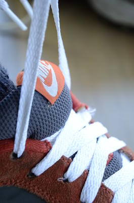

Tired of tying your shoelaces? They're probably too long!
The standard bow knot is a [reef knot](link) with two bights, the purpose of the bights being the eas of untying. [ABOK 1214](link). If you are willing to forego these bights (and some of the untying ease), your laces will stay tied much longer.
First, with your shoe ON, snug up your laces but don't tie them yet.
Instead, tie a [stopper knot](link) in each shoelace where it meets the ground.
And remove the extra lace.

Now when you loosen your shoe, the stopper knot keeps the laces from passing through the top eyelet

Now to tie the shoe, use a simple [reef knot](link) (aka square knot) and pull it *tight*.


You can forget about them now. If they ever come untied on their own, tighten the knot more firmly next time. This knot is really durable. You can read about the history of this famous knot [here](link).
To untie it, capsize the reef knot by yanking one of the laces in the opposite direction.


Once you feel it capsize, the rest unties effortlessly.